Home
Applications of the Discrete Resonance Spectrogram
Dynamic Resonances
Dynamic Resonances
Discrete Resonance Spectrogram
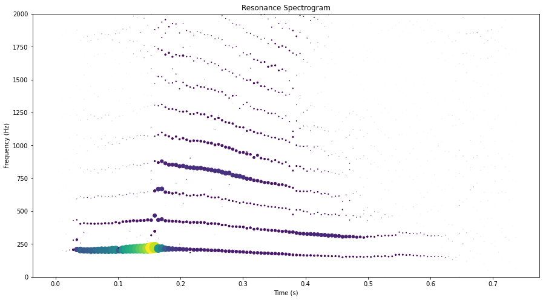
Dynamic Resonance Spectogram
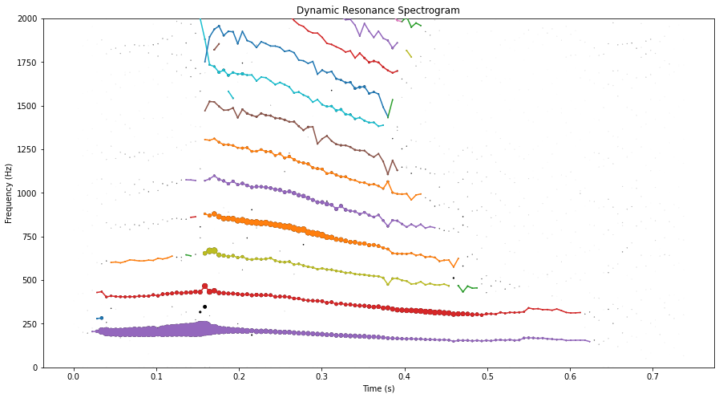
Extended Dynamic Resonance Spectrogram
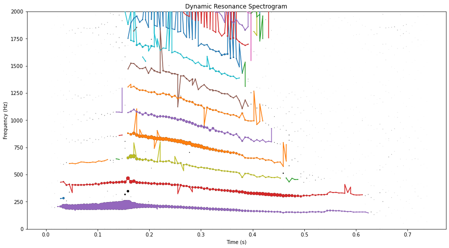
Noise Reduction
Noise Reduction
Discrete Resonance Spectrogram
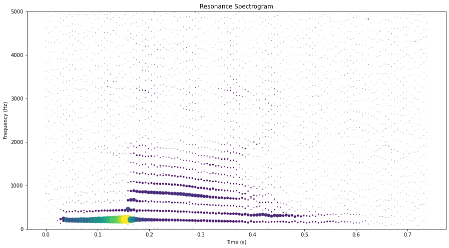
Denoised Discrete Resonance Spectrogram
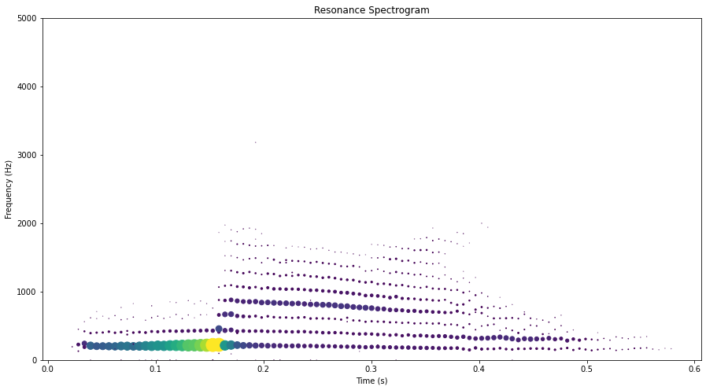
Denoised Reconstruction
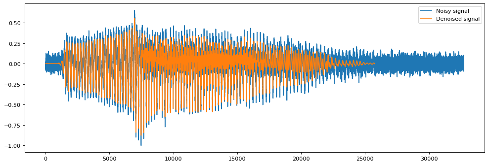
Source Separation
Source Separation
Dynamic Resonances over Continuous Resonance Spectrogram
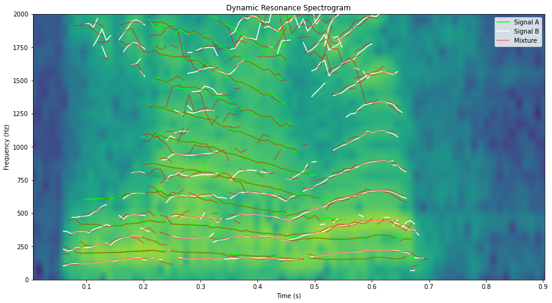
Fundamental Frequency Estimation over Discrete Resonance Spectrogram
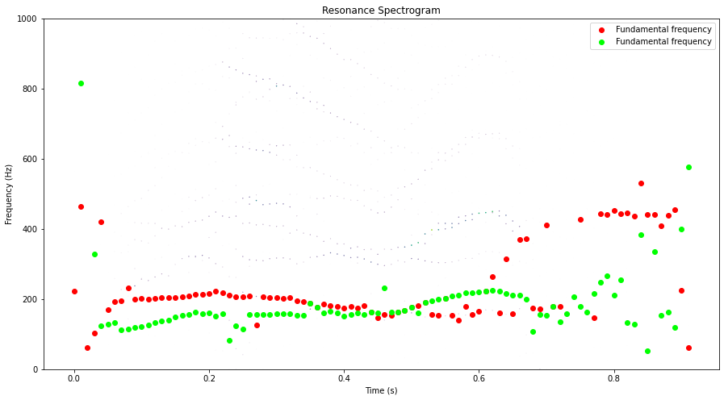
Separated Source 1 - Discrete Resonance Spectrogram
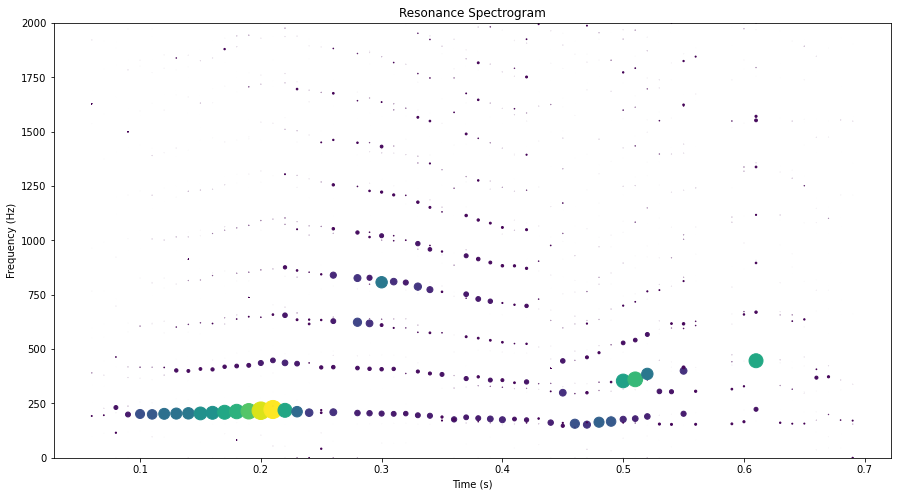
Separated Source 2 - Discrete Resonance Spectrogrm
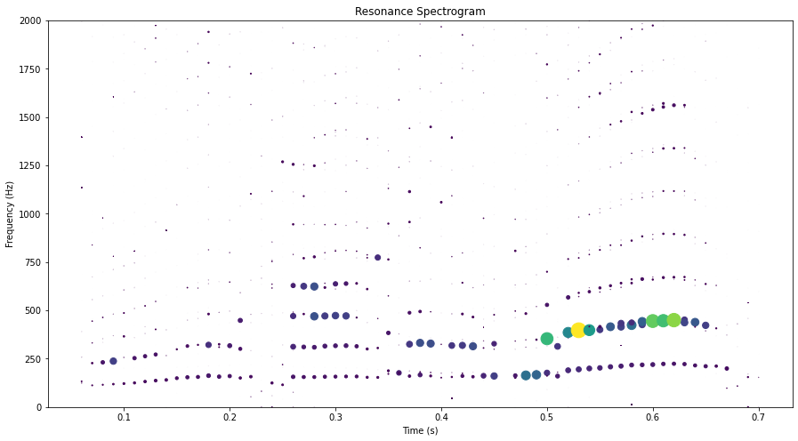
Miscellaneous
Miscellaneous
Fundamental Frequency Estimation
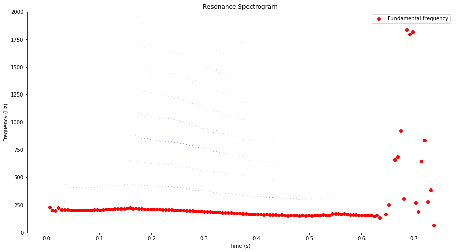
Directed Resonance Spectrogram
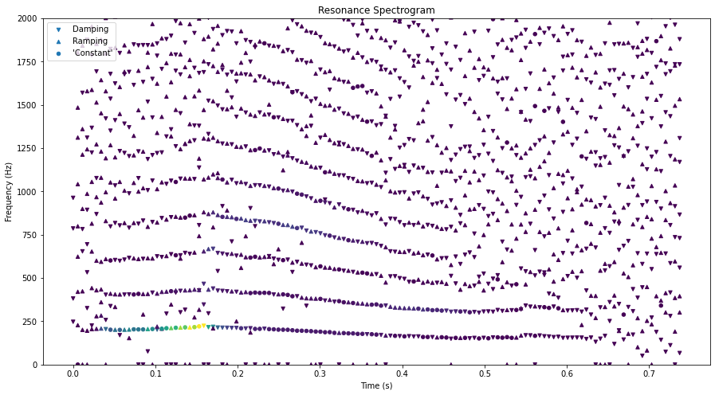
Continuous Density Resonance Spectrogram
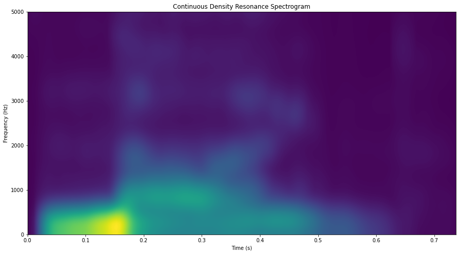
Discrete Density Resonance Spectrogram
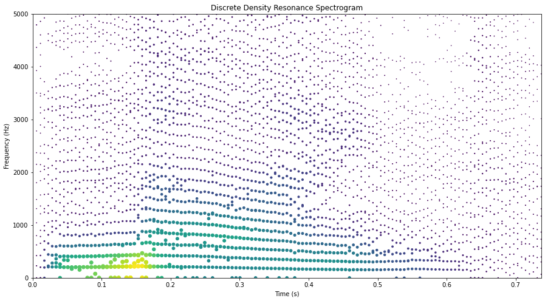